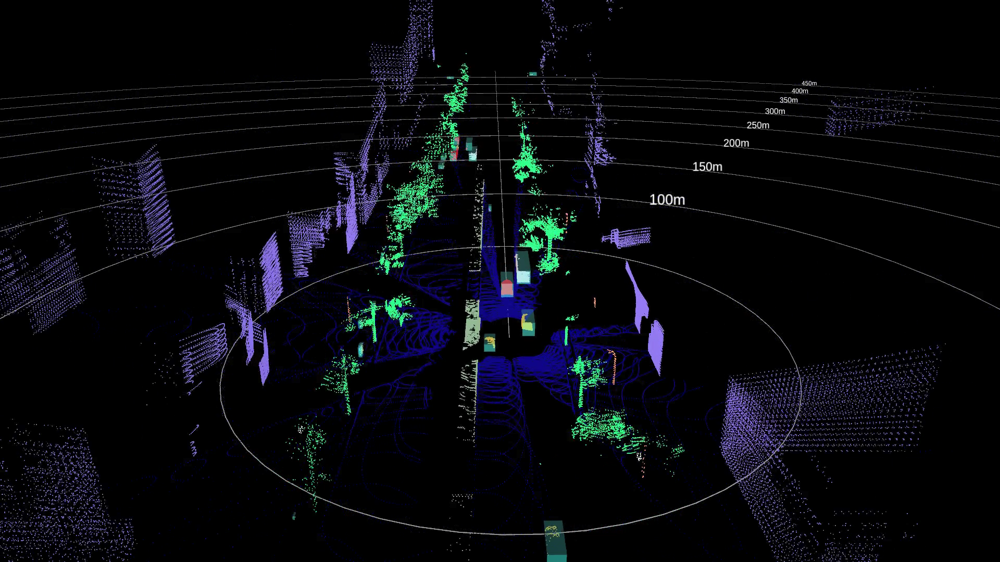

3. Dataset
3.1. Livox Simu-dataset v1.0 CN
Introduction:
Livox Simu-dataset contains point cloud data and corresponding annotations generated based on the autonomous driving simulator, and supports 3D object detection and point cloud semantic segmentation tasks. The sensor contains 5 Horizon lidars and 1 Tele-15 lidar. The entire dataset contains 14,445 frames of 360° Lidar point cloud data, 3D bounding box annotations for 6 types of objects, and semantic annotations for 14 categories. The simulated scene contains a variety of vehicle and pedestrian models and corresponding traffic flow. In addition, a variety of traffic lights, traffic signs, partitions (isolated railings, green belts, isolated piers, etc.), trees and buildings make the entire scene closer to the actual driving scene.
Simulated scene:

Annotation demo:
Data format and download link:
PLEASE READ THESE TERMS CAREFULLY BEFORE DOWNLOADING THE DATASET. DOWNLOADING OR USING THE DATASET MEANS YOU ACCEPT THESE TERMS: GNU General Public License v3.0
Object detection demo: